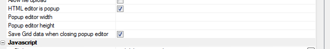

HTML Memo Editor - Popup Mode
When you add a popup HTML editor to the Grid to edit HTML fields, the data in the Grid is not saved when the user closes the popup HTML editor. The data is only saved when the user clicks the Submit button. Now, a new property in the Grid allows you to automatically submit the data in the Grid as soon as the popup HTML editor is closed.